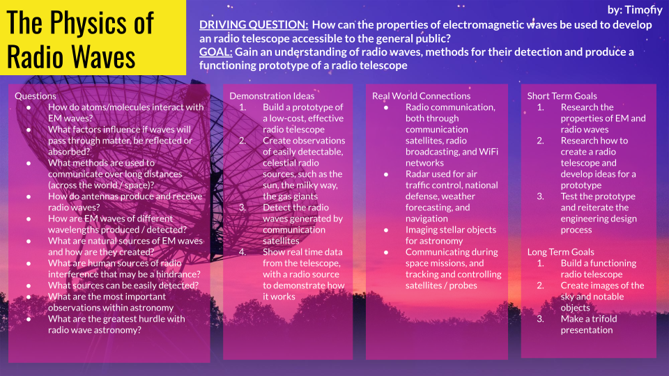

Ideas I want to pursue further:
- Generating and receiving radio waves.
- Testing the penetration/reflection of radio waves through different materials.
- Building a radio satellite using TV dish parts.
- Designing a prototype for an accessible radio telescope for amateur astronomers.
Ideas from peer feedback I did not consider:
- The prototypes and iterations of my product I will need to make: I was more focused on the final product instead of the process needed to get there.
- Creating primary research: I prioritized research needed for creating the physical product. I did not think about undertaking primary research that could be applied to real-world issues relating to my topic.
- Dealing with and combating interference from the environment, which could be applied to astronomy, communications, and radar systems.
Changes/ideas I will implement:
Course of action for creating and testing a radio wave generation:
- Research how to create a radio wave detector and generator
- Research how different materials affect radio waves
- Test the detection with itself and with different materials and thicknesses
- Locate radio waves around the house and determine their sources
- Record results
Building a radio satellite using TV dish parts:
- Research radio waves, look at examples of prototypes other people have created
- Create my own design, taking into consideration the materials at my disposal and budget
- Test the design with real world sources of radio waves, and in different weather conditions
- Use what I’ve learned to design a prototype for a public radio telescope